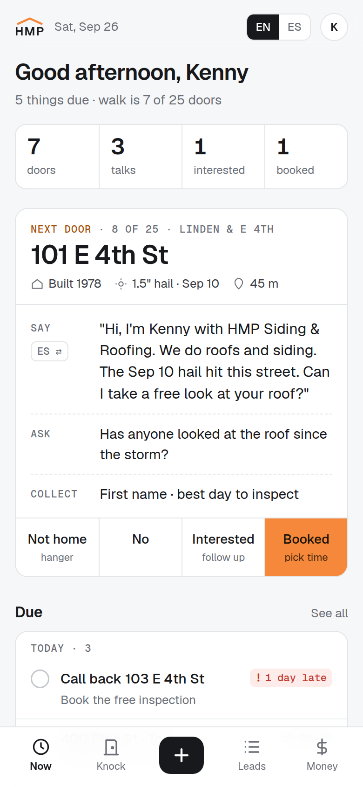
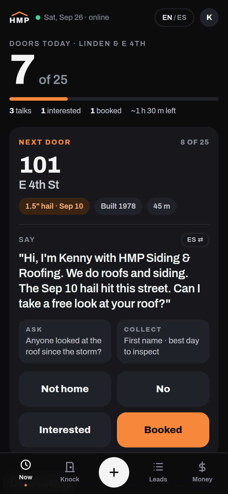
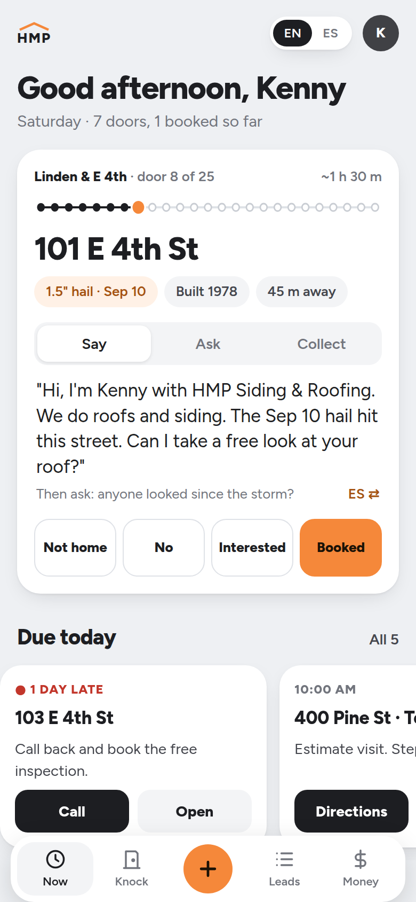
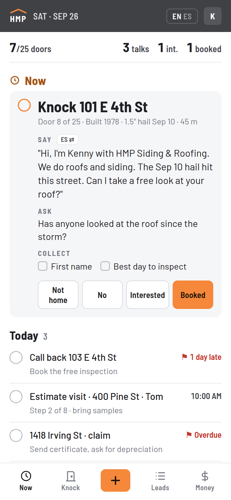

Linear Mobile
Best in class- Does well
- An inbox of only what needs you; swipe to finish or snooze.
- We steal
- Swipe a Due item right to mark it done, left to push it to tomorrow.
Now · Duelinear.app/mobile ↗
The structure stays as you picked it (layout B). This page is only about the look and how the information sits. Same content in all four: the next door, what to say, and what's due.
Misma estructura, cuatro estilos. Escoge uno o mezcla.
Tap one to see it full size with its fonts, colors and spacing. Swipe sideways on your phone.

Light, quiet, exact. Hairlines, one number strip, orange on one button. Reads in full sun.
Stripe Dashboard · Linear · Things 3 Open A →
Near-black, huge numbers, fat buttons. The day's door count comes first, like a driver's earnings.
Uber Driver · Robinhood · Linear Open B →
Friendly white cards. The walk as a row of houses, Say/Ask/Collect as tabs, action buttons on each card.
Airbnb host · CompanyCam · Jobber Open C →
The day is one to-do list. The top item opens with the script inside; Collect is real checkboxes.
Things 3 · Linear inbox · SalesRabbit Open D →| A · Ledger | B · Night Shift | C · Porch | D · Checklist | |
|---|---|---|---|---|
| Readable in sun | best | weak | good | good |
| Glance while walking | best | |||
| Shows the most | best | |||
| Feels like a product | ||||
| Fonts | Geist + Geist Mono | Archivo | Figtree | Barlow (matches print) |
| Light / dark | Light | Dark | Light | Light, charcoal bar |
You use this outside all day, and light screens win in the sun. A is the calmest and looks the most like a product you could sell to other roofers. For your answer, a letter is enough ("A"), or a mix ("A, but D's checkboxes").
Mi elección: A, con el número grande de B en Tocar.
These fix the clutter no matter which look you pick. Every screen of the app gets checked against them.
The top of every screen answers "what do I do now". Today's next door, the next lead step, the next check owed.
Lo siguiente, primero.
Orange means "do this". Everything else is grey or outlined, so the eye lands in one place.
Un solo botón naranja.
7 doors, $19,700 owed: the figure in large type, the word under it. No sentences around numbers.
Números grandes, palabras chicas.
Lists show the next 3 with "See all". The 25-house list, the claim ledger and the glossary open only when asked.
Enseña 3, lo demás con un toque.
Late items get a flag icon and "1 day late", not only red. Works for color-blind eyes and in glare.
Estado con forma y palabra, no solo color.
Follow-ups and next moves become one Due list. One door count, used everywhere, so numbers never disagree.
Cada dato, en un solo lugar.
"Call back", "Booked", "Still owed". No system words (sync, turf, handoff). Scripts in EN with ES one tap away.
Palabras de vendedor, no de sistema.
Buttons in the bottom half, at least 48 px tall. Reading at the top, tapping at the bottom.
Botones al alcance del pulgar.
Six of the best everyday apps and four built for contractors. One idea from each, and where it goes in the HMP App. Links go to each app's own page.